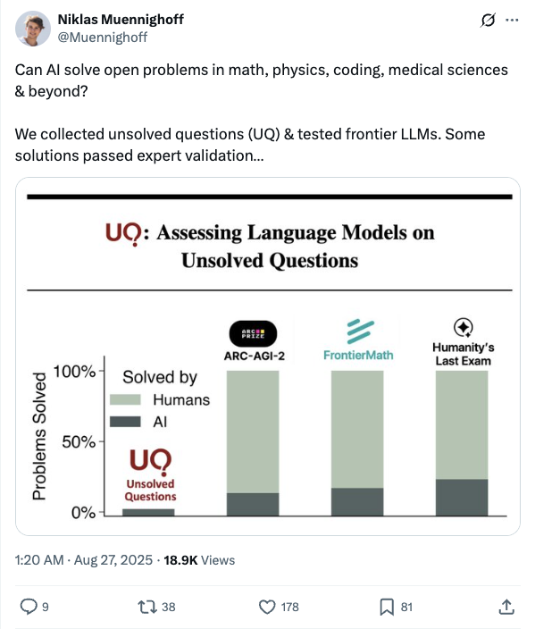
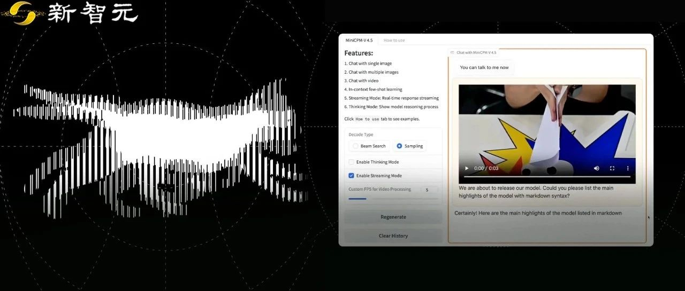
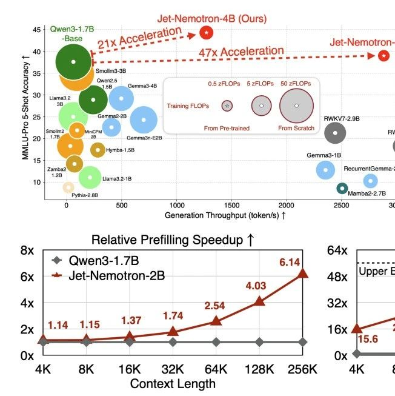
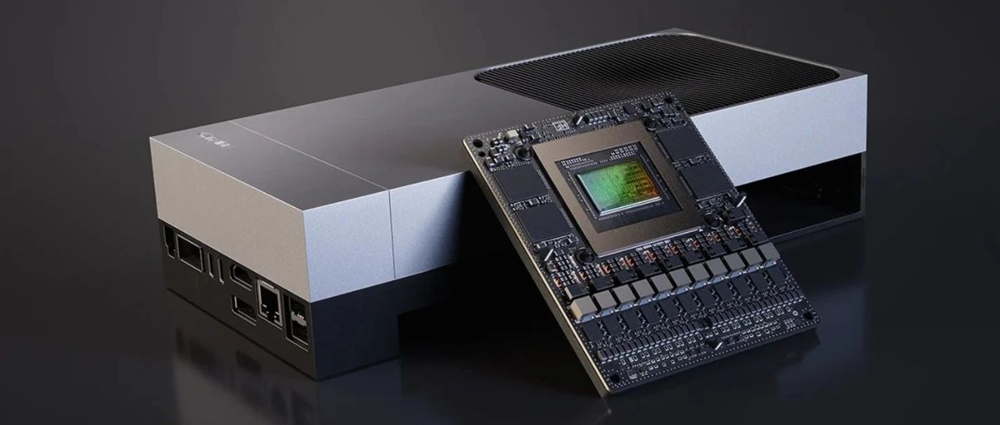
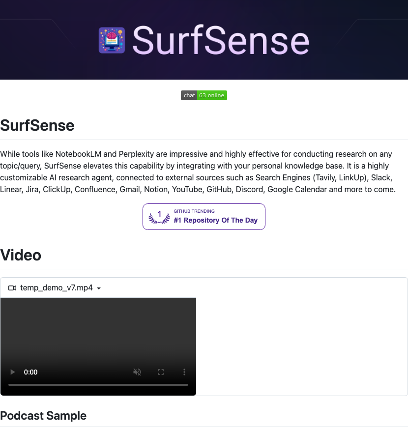

Twitter
demishassabis_Gemini 2.5 Image Model Excels in Editing and Character Consistency
Published: 2025-08-26T14:56:25.000Z
Demis Hassabis of Google DeepMind announced that the new Gemini 2.5 image model is the best in the industry, leading by 180 ELO points in image editing and excelling in character consistency. The model is now available for free in the Gemini App, allowing users to experience its advanced image generation, editing, and refinement capabilities with new levels of visual reasoning.
steeve_zml/llmd Transparently Running on TPU with Paged Attention
Published: 2025-08-26T13:28:02.000Z

Steeve Morin announced that after a week of development, their zml/llmd project is now transparently running on TPUs, featuring full prefill/decode paged attention. This significant advancement means users can enable this functionality with just a single flag and no code changes, greatly simplifying the deployment and optimization of large language models on TPUs. This demonstrates efficient and seamless hardware acceleration capabilities.
Muennighoff_AI Large Models Solve Open Scientific Problems with Expert Validation
Published: 2025-08-26T17:20:46.000Z

Niklas Muennighoff's team is deeply exploring the capability of Artificial Intelligence, specifically frontier Large Language Models (LLMs), in solving open problems across fields like mathematics, physics, coding, and medical sciences. By collecting unsolved questions and testing them with LLMs, they found that some AI-generated solutions successfully passed expert validation. This indicates AI's significant potential in advancing scientific research and pushing the boundaries of existing knowledge.
Google_Google Translate Launches Gemini-Powered Live Translate
Published: 2025-08-26T16:05:27.000Z
Google announced two significant updates to Google Translate, including the launch of a "Live translate" feature powered by Gemini models. Users can now engage in real-time audio conversations with on-screen translations directly within the Translate app, supporting over 70 languages. This feature is rolling out this week to users in the U.S., India, and Mexico, aiming to facilitate communication between speakers of different languages.
CranQnow_Google Chrome Browser Integrates AI Features
Published: 2025-08-26T07:09:36.000Z
Google Chrome has received a significant update, now fully integrating advanced AI capabilities. This groundbreaking AI functionality enables the browser to intelligently read screen content, understand its context, and provide comprehensive explanations for anything a user is viewing, regardless of the website. This major update introduces 10 innovative AI features, designed to significantly enhance user experience and streamline information retrieval.
Google_Fitbit to Launch AI-Powered Personal Health Coach
Published: 2025-08-26T17:59:08.000Z
Google announced that a new AI-powered personal health coach will be available in public preview within the Fitbit app starting this October. This feature integrates the roles of a fitness trainer, sleep coach, and health and wellness advisor, aiming to comprehensively assist users in optimizing their health. This initiative marks a significant step for Google in combining artificial intelligence with wearable health devices, offering users more personalized and intelligent health management services.
wechat
Google Unveils nano-banana: Gemini 2.5 Flash Image!
Published: 2025-08-26T15:32:08.000Z

Google has officially unveiled Gemini 2.5 Flash Image, an upgraded image generation and editing model building upon Gemini 2.0 Flash. This new model has achieved the top rank on the LMArena image editing leaderboard and is now available for API access. Its key highlights include: the ability to seamlessly fuse multiple images, maintain character or object consistency across diverse scenarios, perform precise image transformations and localized edits using natural language prompts, and leverage Gemini's extensive world knowledge for advanced image creation and reasoning. The model underscores the future potential of native multimodal capabilities in the image generation domain, offering robust application templates that demonstrate its powerful abilities in complex editing tasks and semantic understanding. This advancement signifies a significant step towards more intelligent and versatile visual content creation.
Large Models Gain 'Eagle Eye': MiniCPM-V 4.5 Pioneers High-Refresh Video Understanding, Outperforming Google Gemini 2.5
Published: 2025-08-26T15:01:25.000Z

OpenBMB has recently open-sourced MiniCPM-V 4.5, an 8B parameter multimodal model that establishes a new benchmark in edge-side multimodal AI, particularly with its groundbreaking "high-refresh video understanding" capability. This innovative model achieves state-of-the-art (SOTA) performance across a diverse range of tasks, including single-image comprehension, long video analysis, optical character recognition (OCR), and complex document parsing. Remarkably, MiniCPM-V 4.5 not only matches but often surpasses the performance of larger, top-tier cloud-based large models such as Google Gemini 2.5 Pro and OpenAI's GPT-4o, showcasing its "small but powerful" efficiency. Key innovations include an advanced 3D-Resampler structure that enables high-density video compression, allowing it to process significantly more video frames than comparable models. Furthermore, it seamlessly integrates OCR with knowledge learning and supports a controllable hybrid inference mode, balancing deep analysis with rapid response. MiniCPM-V 4.5 demonstrates exceptional performance, energy efficiency, and deployment friendliness, providing a robust and highly efficient solution for a wide array of edge AI applications, from automotive systems to embodied intelligence.
Musk's Trillion-Dollar AI Bet: 50 Million H100 GPUs in Five Years, Aiming for Billions in Compute Power
Published: 2025-08-26T15:01:25.000Z
Elon Musk, the world's richest man, has announced an "all-in" strategy for AI, planning to deploy 50 million H100 GPUs within five years, with an estimated total cost exceeding $2 trillion. This colossal investment, far surpassing the US annual military budget, underscores AI's emergence as a new strategic competitive frontier. Musk aims to build supercomputing clusters like Colossus 2 to provide massive computational power for his companies, including xAI and Tesla. This infrastructure will facilitate the training of next-generation large models (e.g., Grok 4), the development of multimodal agents, and video generation models, ultimately targeting billions of H100s to establish an overwhelming advantage in the AI domain. This ambitious endeavor also faces significant challenges, particularly regarding power supply.
Vision-Language-Action Model + Reinforcement Learning! ReCogDrive: The First Open-Source RL-Driven Driving VLA Model
Published: 2025-08-26T14:00:56.000Z

Huazhong University of Science and Technology and Xiaomi Auto have jointly introduced ReCogDrive, the first open-source reinforcement learning-driven driving Vision-Language-Action (VLA) model. This novel framework integrates the world knowledge of Vision-Language Models (VLMs), a diffusion planner, and reinforcement learning fine-tuning to address the generalization challenges of end-to-end autonomous driving in long-tail scenarios. ReCogDrive employs a three-stage training paradigm: building a 3.1 million driving Q&A dataset, incorporating a diffusion model for continuous trajectory generation, and leveraging simulator-assisted reinforcement learning to optimize driving strategies. This approach enables the model to comprehend complex road conditions and generate safe, human-like driving trajectories. Achieving a new SOTA score of PDMS 90.5 on the NAVSIM benchmark, ReCogDrive significantly enhances autonomous driving's cognitive capabilities and generalization performance, advancing the application of VLMs in safe driving.
NVIDIA's New Model Launched! 4B Inference Soars 53x, New Attention Architecture Surpasses Mamba 2
Published: 2025-08-26T14:00:56.000Z

NVIDIA has launched its new Jet-Nemotron small model series (2B/4B), developed by an all-Chinese team. Key innovations include Post Neural Architecture Search (PostNAS) for efficient architecture optimization and the novel linear attention module, JetBlock. These models surpass mainstream counterparts like Qwen3, Gemma3, and Llama3.2 in accuracy across various benchmarks including mathematics, code, common sense, retrieval, and long-context understanding. Furthermore, Jet-Nemotron achieves up to a 53-fold increase in inference throughput on H100 GPUs, demonstrating exceptional performance, particularly in long-context scenarios. JetBlock significantly outperforms previous designs like Mamba2, positioning Jet-Nemotron as a highly efficient small model that combines speed with accuracy, signaling NVIDIA's continued focus on the small model domain.
NVIDIA's General-Purpose Robot Chip Arrives: AI Computing Power Boosted by 7.5x, Unitree and Galactic General Already Adopting
Published: 2025-08-26T04:09:14.000Z

NVIDIA has officially launched its next-generation robot-specific chip, Jetson Thor, featuring a Blackwell architecture GPU. This new chip boasts a 7.5x increase in AI computing power over its predecessor, reaching 2070 FP4 TFLOPS, and a 3.5x improvement in energy efficiency. Designed for embodied AI and physical AI agents, Jetson Thor supports large Transformer, VLM, and VLA models for real-time edge-side operation, minimizing cloud dependency. It is compatible with NVIDIA's full AI software stack and has already been adopted by leading Chinese robotics companies like Unitree Technology and Galactic General. NVIDIA is strategically positioning itself in the multi-trillion dollar robotics and autonomous driving markets, viewing them as key future growth drivers, aiming to provide foundational computing power and software support for the entire industry.
GitHub
System Prompts Leaks
Published: 2025-08-26T15:45:44Z

The "System Prompts Leaks" GitHub repository is a dedicated and growing collection of system message instructions obtained from various publicly deployed chatbots. This valuable resource offers a unique opportunity for researchers, developers, and AI enthusiasts to delve into the foundational prompt designs that dictate the behavior and responses of diverse AI conversational agents. By centralizing these "leaked" prompts, the project provides critical insights for understanding the nuances of large language model (LLM) interactions, advancing the field of prompt engineering, and addressing crucial aspects related to AI safety, ethics, and potential biases. The initiative actively encourages community contributions, aiming to foster greater transparency and facilitate a deeper, more comprehensive understanding of the intricate internal workings of contemporary AI systems, thereby serving as an essential reference for anyone studying chatbot architecture and prompt-driven AI development.
Verifiers
Published: 2025-08-26T11:55:03Z

Verifiers is a comprehensive, modular library specifically engineered for constructing sophisticated environments and training advanced agents within the domain of Large Language Model (LLM) Reinforcement Learning. It incorporates an asynchronous GRPO implementation, seamlessly integrating with the Hugging Face Transformers Trainer and leveraging `prime-rl` for efficient, large-scale FSDP training across multiple GPUs. Beyond core RL training, Verifiers serves as a versatile tool for conducting rigorous LLM evaluations, streamlining synthetic data generation pipelines, and developing robust agent harnesses. The library supports diverse interaction paradigms, including single-turn, multi-turn, and complex tool-calling environments, while maintaining compatibility with OpenAI-compatible inference clients and advanced vLLM sampling parameters. Its design philosophy emphasizes providing a reliable and extensible toolkit for RL infrastructure, actively working to mitigate the common issue of "fork proliferation" prevalent in the research ecosystem.
DeepCode: Open Agentic Coding
Published: 2025-08-23T14:44:18Z

DeepCode, an innovative AI-powered open agentic coding platform developed by the Data Intelligence Lab at the University of Hong Kong, revolutionizes software development by automating complex code generation and implementation tasks. Leveraging a sophisticated multi-agent system, it efficiently translates diverse inputs, from intricate research papers to natural language descriptions, into high-quality, production-ready code. Its core capabilities, such as Paper2Code, streamline the implementation of complex algorithms; Text2Web facilitates rapid frontend web development; and Text2Backend automates robust server-side code generation. This comprehensive approach significantly accelerates the entire development lifecycle, from initial concept to deployable code, while boosting overall efficiency and enabling seamless research reproducibility. DeepCode provides flexible interaction through both command-line and intuitive web interfaces, and ensures broad tool compatibility through its adherence to the Model Context Protocol (MCP) standard, making it a powerful solution for modern coding challenges.
SurfSense
Published: 2025-08-27T01:08:41Z

SurfSense is a highly customizable AI research agent designed to enhance research capabilities by integrating personal knowledge bases with external data sources such as search engines, Slack, Notion, and YouTube. It supports uploading over 50 file formats, offering powerful search, natural language interaction with saved content, and cited answers. The project emphasizes privacy with local LLM support and is self-hostable. Its core technologies include advanced RAG techniques (supporting over a hundred LLMs and thousands of embedding models, utilizing hierarchical indices and hybrid search) and rapid podcast generation. SurfSense also provides a cross-browser extension for saving web page content.
MCP Gateway
Published: 2025-08-25T11:22:49Z

MCP Gateway is a feature-rich gateway, proxy, and MCP Registry designed to unify REST, MCP, and A2A services, providing a single endpoint for AI clients. It supports service discovery, authentication, rate-limiting, observability, virtual servers, and multi-transport protocols, along with an optional Admin UI. Deployable as a fully compliant MCP server via PyPI or Docker, it scales to multi-cluster Kubernetes environments with Redis-backed federation and caching. The gateway integrates external AI agents (e.g., OpenAI, Anthropic) and virtualizes them as MCP-compliant tools, offers OpenTelemetry observability, and supports various deployment options including PyPI, Docker, and IBM Cloud Code Engine.
An Open-Source, Visual-First Code Editor
Published: 2025-08-25T20:56:17Z

Onlook is an open-source, visual-first code editor designed for designers. It enables users to build websites, prototypes, and designs with AI in Next.js and TailwindCSS environments, supporting direct visual editing within the browser DOM for real-time synchronization between code and design. This project aims to provide a powerful alternative, integrating AI-assisted development, real-time code editing, and project deployment features. It utilizes an innovative web container architecture, ensuring an efficient and flexible development experience for crafting modern web applications.
huggingface
InternVL3.5: Advancing Open-Source Multimodal Models in Versatility,
Reasoning, and Efficiency
Published: 2025-08-25T17:58:17.000Z

We introduce InternVL 3.5, a new family of open-source multimodal models that
significantly advances versatility, reasoning capability, and inference
efficiency along the InternVL series. A key innovation is the Cascade
Reinforcement Learning (Cascade RL) framework, which enhances reasoning through
a two-stage process: offline RL for stable convergence and online RL for
refined alignment. This coarse-to-fine training strategy leads to substantial
improvements on downstream reasoning tasks, e.g., MMMU and MathVista. To
optimize efficiency, we propose a Visual Resolution Router (ViR) that
dynamically adjusts the resolution of visual tokens without compromising
performance. Coupled with ViR, our Decoupled Vision-Language Deployment (DvD)
strategy separates the vision encoder and language model across different GPUs,
effectively balancing computational load. These contributions collectively
enable InternVL3.5 to achieve up to a +16.0\% gain in overall reasoning
performance and a 4.05times inference speedup compared to its predecessor,
i.e., InternVL3. In addition, InternVL3.5 supports novel capabilities such as
GUI interaction and embodied agency. Notably, our largest model, i.e.,
InternVL3.5-241B-A28B, attains state-of-the-art results among open-source MLLMs
across general multimodal, reasoning, text, and agentic tasks -- narrowing the
performance gap with leading commercial models like GPT-5. All models and code
are publicly released.
Visual-CoG: Stage-Aware Reinforcement Learning with Chain of Guidance
for Text-to-Image Generation
Published: 2025-08-25T13:53:02.000Z

Despite the promising progress of recent autoregressive models in
text-to-image (T2I) generation, their ability to handle multi-attribute and
ambiguous prompts remains limited. To address these limitations, existing works
have applied chain-of-thought (CoT) to enable stage-aware visual synthesis and
employed reinforcement learning (RL) to improve reasoning capabilities.
However, most models provide reward signals only at the end of the generation
stage. This monolithic final-only guidance makes it difficult to identify which
stages contribute positively to the final outcome and may lead to suboptimal
policies. To tackle this issue, we propose a Visual-Chain of Guidance
(Visual-CoG) paradigm consisting of three stages: semantic reasoning, process
refining, and outcome evaluation, with stage-aware rewards providing immediate
guidance throughout the image generation pipeline. We further construct a
visual cognition benchmark, VisCog-Bench, which comprises four subtasks to
evaluate the effectiveness of semantic reasoning. Comprehensive evaluations on
GenEval, T2I-CompBench, and the proposed VisCog-Bench show improvements of 15%,
5%, and 19%, respectively, demonstrating the superior performance of the
proposed Visual-CoG. We will release all the resources soon.
Breaking the Exploration Bottleneck: Rubric-Scaffolded Reinforcement
Learning for General LLM Reasoning
Published: 2025-08-23T08:47:31.000Z

Recent advances in Large Language Models (LLMs) have underscored the
potential of Reinforcement Learning (RL) to facilitate the emergence of
reasoning capabilities. Despite the encouraging results, a fundamental dilemma
persists as RL improvement relies on learning from high-quality samples, yet
the exploration for such samples remains bounded by the inherent limitations of
LLMs. This, in effect, creates an undesirable cycle in which what cannot be
explored cannot be learned. In this work, we propose Rubric-Scaffolded
Reinforcement Learning (RuscaRL), a novel instructional scaffolding framework
designed to break the exploration bottleneck for general LLM reasoning.
Specifically, RuscaRL introduces checklist-style rubrics as (1) explicit
scaffolding for exploration during rollout generation, where different rubrics
are provided as external guidance within task instructions to steer diverse
high-quality responses. This guidance is gradually decayed over time,
encouraging the model to internalize the underlying reasoning patterns; (2)
verifiable rewards for exploitation during model training, where we can obtain
robust LLM-as-a-Judge scores using rubrics as references, enabling effective RL
on general reasoning tasks. Extensive experiments demonstrate the superiority
of the proposed RuscaRL across various benchmarks, effectively expanding
reasoning boundaries under the best-of-N evaluation. Notably, RuscaRL
significantly boosts Qwen-2.5-7B-Instruct from 23.6 to 50.3 on HealthBench-500,
surpassing GPT-4.1. Furthermore, our fine-tuned variant on
Qwen3-30B-A3B-Instruct achieves 61.1 on HealthBench-500, outperforming leading
LLMs including OpenAI-o3.
PosterGen: Aesthetic-Aware Paper-to-Poster Generation via Multi-Agent
LLMs
Published: 2025-08-24T02:25:45.000Z

Multi-agent systems built upon large language models (LLMs) have demonstrated
remarkable capabilities in tackling complex compositional tasks. In this work,
we apply this paradigm to the paper-to-poster generation problem, a practical
yet time-consuming process faced by researchers preparing for conferences.
While recent approaches have attempted to automate this task, most neglect core
design and aesthetic principles, resulting in posters that require substantial
manual refinement. To address these design limitations, we propose PosterGen, a
multi-agent framework that mirrors the workflow of professional poster
designers. It consists of four collaborative specialized agents: (1) Parser and
Curator agents extract content from the paper and organize storyboard; (2)
Layout agent maps the content into a coherent spatial layout; (3) Stylist
agents apply visual design elements such as color and typography; and (4)
Renderer composes the final poster. Together, these agents produce posters that
are both semantically grounded and visually appealing. To evaluate design
quality, we introduce a vision-language model (VLM)-based rubric that measures
layout balance, readability, and aesthetic coherence. Experimental results show
that PosterGen consistently matches in content fidelity, and significantly
outperforms existing methods in visual designs, generating posters that are
presentation-ready with minimal human refinements.
Understanding Tool-Integrated Reasoning
Published: 2025-08-26T17:03:46.000Z

We study why Tool-Integrated Reasoning (TIR) makes Large Language Models
(LLMs) more capable. While LLMs integrated with tools like Python code
interpreters show great promise, a principled theory explaining why this
paradigm is effective has been missing. This work provides the first formal
proof that TIR fundamentally expands an LLM's capabilities. We demonstrate that
tools enable a strict expansion of the model's empirical and feasible support,
breaking the capability ceiling of pure-text models by unlocking
problem-solving strategies that are otherwise impossible or intractably
verbose. To guide model behavior without compromising training stability and
performance, we also introduce Advantage Shaping Policy Optimization (ASPO), a
novel algorithm that directly modifies the advantage function to guide the
policy behavior. We conduct comprehensive experiments on challenging
mathematical benchmarks, leveraging a Python interpreter as the external tool.
Our results show that the TIR model decisively outperforms its pure-text
counterpart on the pass@k metric. Crucially, this advantage is not confined to
computationally-intensive problems but extends to those requiring significant
abstract insight. We further identify the emergent cognitive patterns that
illustrate how models learn to think with tools. Finally, we report improved
tool usage behavior with early code invocation and much more interactive turns
with ASPO. Overall, our work provides the first principled explanation for
TIR's success, shifting the focus from the mere fact that tools work to why and
how they enable more powerful reasoning.
TaDiCodec: Text-aware Diffusion Speech Tokenizer for Speech Language
Modeling
Published: 2025-08-22T20:45:03.000Z

Speech tokenizers serve as foundational components for speech language
models, yet current designs exhibit several limitations, including: 1)
dependence on multi-layer residual vector quantization structures or high frame
rates, 2) reliance on auxiliary pre-trained models for semantic distillation,
and 3) requirements for complex two-stage training processes. In this work, we
introduce the Text-aware Diffusion Transformer Speech Codec (TaDiCodec), a
novel approach designed to overcome these challenges. TaDiCodec employs
end-to-end optimization for quantization and reconstruction through a diffusion
autoencoder, while integrating text guidance into the diffusion decoder to
enhance reconstruction quality and achieve optimal compression. TaDiCodec
achieves an extremely low frame rate of 6.25 Hz and a corresponding bitrate of
0.0875 kbps with a single-layer codebook for 24 kHz speech, while maintaining
superior performance on critical speech generation evaluation metrics such as
Word Error Rate (WER), speaker similarity (SIM), and speech quality (UTMOS).
Notably, TaDiCodec employs a single-stage, end-to-end training paradigm, and
obviating the need for auxiliary pre-trained models. We also validate the
compatibility of TaDiCodec in language model based zero-shot text-to-speech
with both autoregressive modeling and masked generative modeling, demonstrating
its effectiveness and efficiency for speech language modeling, as well as a
significantly small reconstruction-generation gap. We will open source our code
and model checkpoints. Audio samples are are available at
https:/tadicodec.github.io/. We release code and model checkpoints at
https:/github.com/HeCheng0625/Diffusion-Speech-Tokenizer.